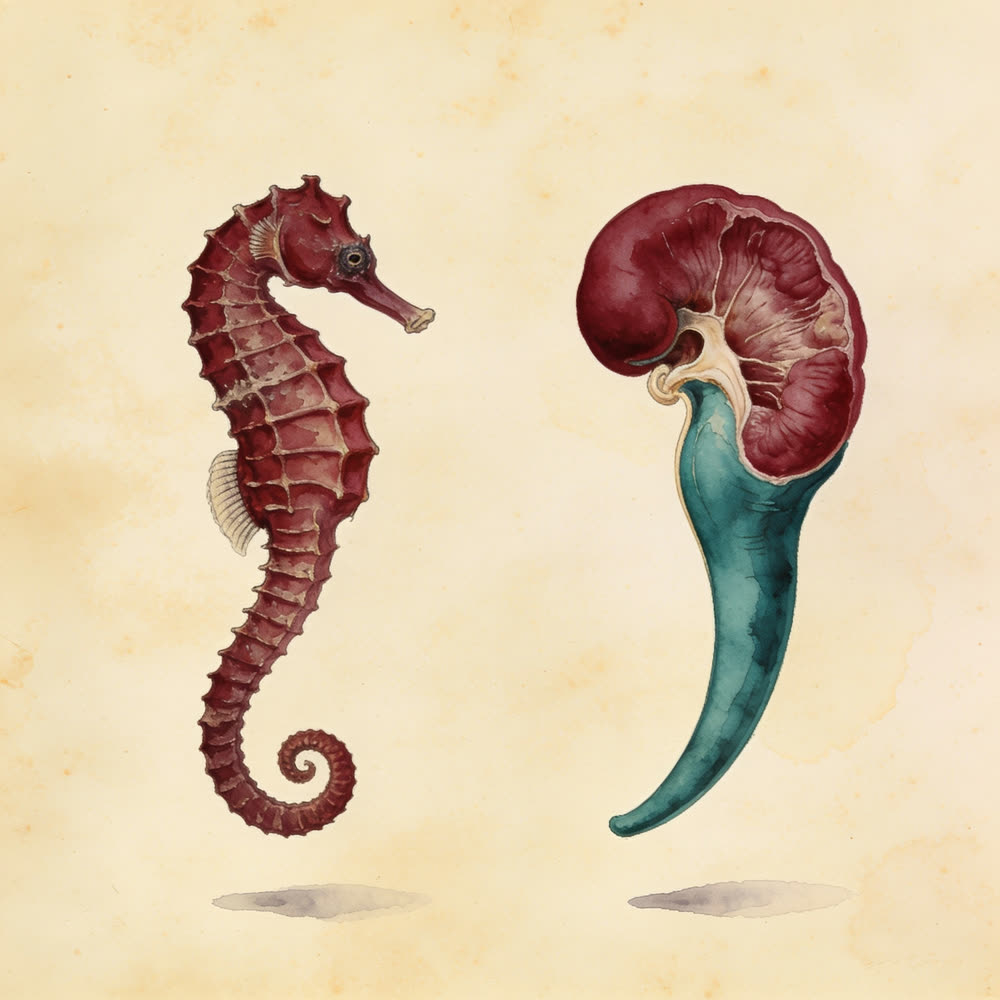
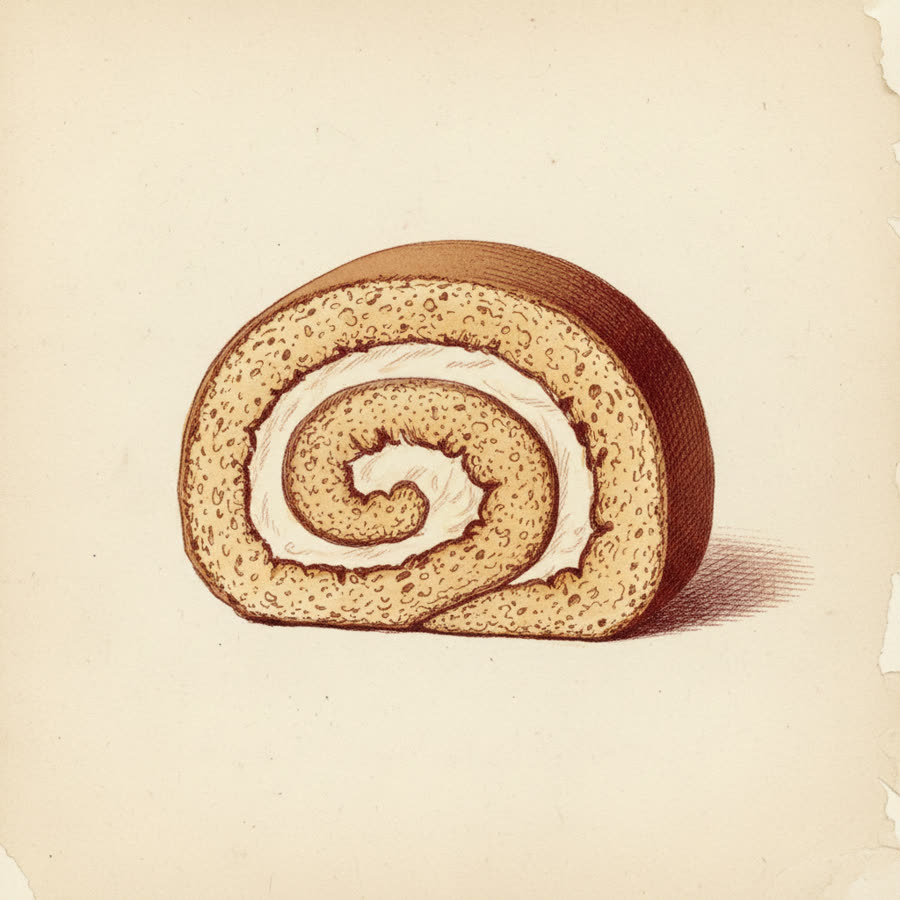
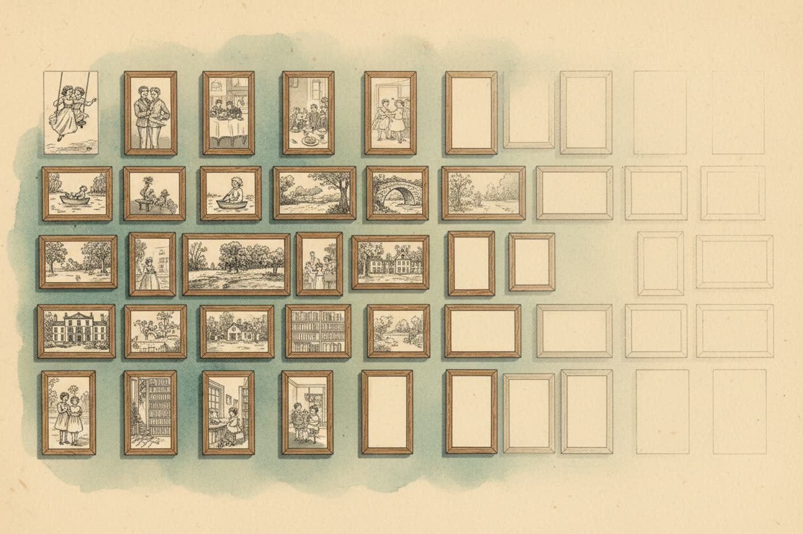
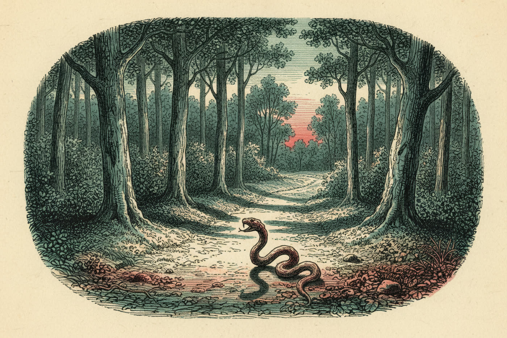
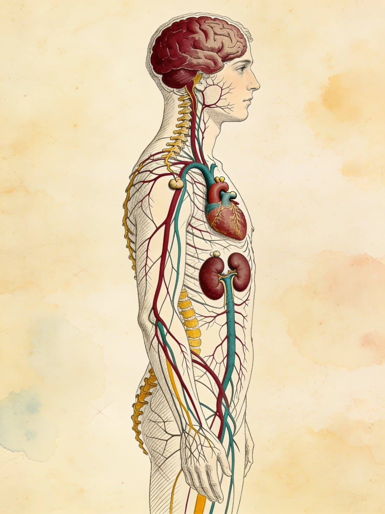

Ein System, das keins sein wollte
Ein verteiltes Netzwerk, ein lateinischer Saum — und 150 Jahre Streit.
Das limbische System ist keine anatomisch scharf begrenzte Einheit, sondern ein funktionell definiertes, verteiltes Netzwerk — und bis heute die wohl umstrittenste „Struktur“ des Gehirns. Während sich der Okzipitallappen (Sehen) oder das Kleinhirn (Bewegungskoordination) sauber abgrenzen lassen, liegen die limbischen Strukturen über weite Teile des Gehirns verstreut. Zusammengehalten werden sie von zwei Kriterien: auffällig starken Faserverbindungen untereinander und einer gemeinsamen Funktion. Konsens besteht über einen Kernbestand von Strukturen, die zwei Leistungen tragen: die Gedächtniskonsolidierung und wesentliche Anteile der Emotionsverarbeitung. Die Abgrenzung zu Nachbarn (Septumregion, Riechhirn, Teile des Hypothalamus) bleibt Definitionssache — das darf man in Prüfungen genau so benennen.
- Alle zentralen Strukturen sicher benennen und im Schnittbild finden.
- Die zwei Kernfunktionen erklären: Gedächtniskonsolidierung und Emotion.
- Die drei prüfungsrelevanten Verschaltungen zeichnen können: Papez-Kreis, Stria terminalis, Amygdala-Hippocampus-Brücke.
Die Landkarte
Sieben Strukturen, wild verteilt — hier hängen sie alle an einer Tafel.
- Hippocampus „Seepferdchen“
- Zentrale Struktur der Gedächtniskonsolidierung, beidseits am medialen Temporallappen im Boden des Unterhorns des Seitenventrikels. Er ist nicht Speicherort des Gedächtnisses, sondern dessen Schreibkopf: In seiner eingerollten Rinde kreist Erregung, bis Inhalte kortikal verankert sind (→ Tafel III).
- Fornix „das Gewölbe“
- Efferenzbogen des Hippocampus: zieht als Gewölbe unter dem Corpus callosum nach rostral und endet größtenteils in den Corpora mamillaria. Lagebeziehung merken: Fornix unter dem Balken, Gyrus cinguli über ihm.
- Corpora mamillaria Mamillarkörper
- Paarige Kerngebiete des kaudalen Hypothalamus (Diencephalon), direkt hinter der Hypophyse; Hauptziel des Fornix und obligate Station des Papez-Kreises. Läsionen stören die Konsolidierung ähnlich wie Hippocampusschäden. Der Name: Anatomen sahen hier mamillae — Brustwarzen.
- Nuclei anteriores thalami vordere Thalamuskerne
- Der Thalamus ist der Türsteher zum Bewusstsein; seine vorderen Kerne sind fest ans limbische System abgestellt. Afferenz aus den Mamillarkörpern über das Vicq-d’Azyr-Bündel (Tractus mamillothalamicus), Projektion weiter zum Gyrus cinguli.
- Gyrus cinguli „Gürtelwindung“
- Rückschenkel des Papez-Kreises, bogenförmig über dem Balken. Direkt auf dem Balken liegt zusätzlich das Indusium griseum — ein funktionell bedeutungsloser Rest der Hippocampusanlage. Prüfungsklassiker: nicht mit dem eigentlichen Rückweg verwechseln.
- Gyrus parahippocampalis „neben dem Seepferdchen“
- Setzt den Gyrus cinguli um das Splenium herum an die mediobasale Temporallappenfläche fort und liegt über bzw. um den Hippocampus — das Eingangstor der Schleife zurück in den Hippocampus. Im Präparat verdeckt er ihn von medial-basal.
- Amygdala Corpus amygdaloideum, „Mandelkern“
- Mandelform, Mandelgröße, direkt rostral des Hippocampuskopfes. Die einzige Kernstruktur außerhalb des Papez-Kreises; ihre zwei prüfungsrelevanten Bahnen: Stria terminalis → Hypothalamus (Angstreaktion, Kap. 06) und die direkte Verbindung zum Hippocampus (emotionale Gedächtnisverstärkung).

Das Original in Bewegung
Die Tafeln dieses Atlas sind Schemata. Die rotierenden 3D-Modellansichten, auf denen sie beruhen, gehören Dr. Janis — deshalb laufen sie hier im eingebetteten Original, kapitelgenau ansteuerbar.
Modellansichten © Neurologie mit Dr. Janis — als Einbettung, damit Urheber- und Bildrechte sauber bleiben; Standbilder daraus dürften wir hier nicht veröffentlichen.
Funktion I — Vom Moment zur Erinnerung
Drei Instanzen, ein Flaschenhals: die Konsolidierung.
Das Gedächtnis wohnt nicht an einem Ort. Das Kurzzeit- bzw. Arbeitsgedächtnis ist eine Leistung des präfrontalen Kortex und trägt eine ständig wiederholte Information — eine Telefonnummer etwa — rund 30 Sekunden bis 2 Minuten. Das Langzeitgedächtnis liegt weit verteilt in der Großhirnrinde. Der Weg vom einen ins andere heißt Gedächtniskonsolidierung — und genau dieser Schritt ist die Kernaufgabe des limbischen Systems: Ohne Hippocampus wird nichts Neues dauerhaft gespeichert.

Der Hippocampus ist nicht der Speicher — er ist der Schreibvorgang. Kurzzeitgedächtnis: präfrontaler Kortex. Langzeitgedächtnis: verteilte Großhirnrinde. Dazwischen: die Schleife.
Der Papez-Kreis
Die Konsolidierungsschleife — direkt auf der Anatomie.
Der Hippocampus schafft die Konsolidierung nicht allein: Neben dem inneren Kreisen braucht er einen äußeren Kreislauf, durch den die Inhalte rotieren — den Papez-Kreis (James Papez, 1937; ursprünglich als Emotionskreis gedacht, heute vor allem als Gedächtnisschleife verstanden). Läsionen an jeder beliebigen Station erzeugen ähnliche Konsolidierungsdefizite — das macht ihn klinisch wie prüfungstechnisch zum Pflichtstoff.
„Hipster fordern Mamas antiken Doppel-Gyros.“
- Hipster → Hippocampus
- fordern → Fornix
- Mamas → Corpora mamillaria
- antiken → Ncll. anteriores thalami
- Doppel-Gyros → Gyrus cinguli + Gyrus parahippocampalis
Nach Dr. Janis (Neurologie mit Dr. Janis), angelehnt an einen DocCheck-Klassiker. Warum Hipster antikes Gyros bestellen? Unklar — aber genau deshalb vergisst man es nie wieder.
Tippe eine Nummer an — oder lass die Schleife einmal komplett durchlaufen.
Unterbrechung an irgendeiner Stelle des Kreises → Konsolidierungsstörung. Nicht nur der Hippocampus selbst ist kritisch. Was das bedeutet, zeigt der berühmteste Patient der Hirnforschung — nächstes Kapitel.
Bring den Kreis in Ordnung
Tippe die Etiketten in der richtigen Reihenfolge an — beginnend beim Hippocampus.
Der Mann, der die Gegenwart verlor
Patient H.M. — eine Läsion, die das Gedächtnis kartierte.
Der Klassiker der Gedächtnisforschung: Bei Henry Molaison („H.M.“) wurden 1953 zur Behandlung einer therapieresistenten Epilepsie beidseits die medialen Temporallappen samt Hippocampus reseziert (aufgearbeitet bei Corkin, 2002). Die Anfälle besserten sich deutlich — doch der Eingriff durchtrennte die Konsolidierungsschleife auf beiden Seiten. Das Ergebnis war eine nahezu reine anterograde Amnesie für deklarative Inhalte bei erhaltener Intelligenz und Sprache: Ab dem Tag der Operation konnte H.M. nichts Neues mehr dauerhaft abspeichern. Brenda Milner, die ihn über Jahrzehnte untersuchte, musste sich ihm bei jeder Sitzung aufs Neue vorstellen.

Verloren
- Neue deklarative Langzeiterinnerungen — Fakten wie Erlebtes: nichts nach der OP wurde dauerhaft gespeichert (anterograde Amnesie).
- Menschen, die er neu traf, blieben ihm fremd — jede Begegnung war die erste.
Erhalten
- Kurzzeitgedächtnis — 30 Sekunden bis 2 Minuten trug der präfrontale Kortex weiter.
- Altes Langzeitgedächtnis — vor der OP Gespeichertes, besonders länger Zurückliegendes, blieb abrufbar.
- Implizites Lernen — neue Bewegungsabläufe gingen weiterhin: Radfahren hätte er lernen können, ohne je zu wissen, dass er es geübt hat.
Befund: Der Hippocampus wird fürs Neu-Abspeichern gebraucht — nicht fürs Behalten des Alten, nicht fürs Kurzzeitgedächtnis, nicht für Bewegungslernen.
H.M. beweist beides zugleich: Ohne Hippocampus keine neuen deklarativen Erinnerungen — und: Der Langzeitspeicher liegt woanders, sonst wären auch die alten Erinnerungen fort gewesen.
Funktion II — Angst, Wut & die Amygdala
Der Bedrohungsscanner und seine Alarmanlage im Körper.
„Das limbische System ist unser Emotionszentrum.“ So stand es früher in den Büchern: unten das chaotische Gefühlshirn, obendrüber der vernünftige Kortex. Heute weiß man: So klar trennt sich das nicht — an Emotionen sind viele Hirnregionen und sogar große Teile des Körpers beteiligt. Das limbische System bleibt wichtig, aber nicht exklusiv. Eine Struktur sticht heraus: die Amygdala, spezialisiert auf negative Emotionen — allen voran Angst und Wut.
Damit die Angstreaktion schnell kommt, erhält die Amygdala direkte Zuflüsse aus allen sinnesverarbeitenden Rindenfeldern — Sehen, Hören, Riechen — und durchforstet diesen Strom pausenlos nach einer einzigen Frage: Ist da etwas Gefährliches?


Die Alarmkette
- Sinneseindruck. Alle sensorischen Rindenfelder melden direkt an die Amygdala — ohne Umweg über bewusstes Nachdenken.
- Amygdala schlägt an. Mustererkennung auf Bedrohung: „Schlange!“
- Hypothalamus wird gezündet — über die Stria terminalis, einen bogenförmigen Umweg ähnlich dem Fornix, aber ohne weitere Umschaltung. Der Hypothalamus ist die Steuerzentrale des vegetativen Nervensystems, die Brücke zwischen Gehirn und Körper.
- Sympathikus feuert (neuronal, schnell): Fight-or-Flight über den Grenzstrang entlang der Wirbelsäule.
- Herz & Muskeln fahren hoch — Herzfrequenz steigt, Muskulatur wird durchblutet, Aufmerksamkeit schärft sich.
- Hormonweg parallel: Hypophyse → Nebennieren (auf den Nieren sitzend) schütten Adrenalin und Cortisol aus — der Alarm bleibt bestehen.
Emotion × Gedächtnis: Emotionale Ereignisse bleiben besser hängen als neutrale — dank einer direkten Verbindung der Amygdala zum Hippocampus, ihrem unmittelbaren Nachbarn. Löst ein Ereignis starke Emotionen aus, wird es besonders fest konsolidiert. Evolutionär sinnvoll: Wer den Säbelzahntiger einmal gesehen hat, erkennt ihn beim nächsten Mal schon am Schatten.
Randnotizen
Was das limbische System sonst noch (mit-)macht.
Gedächtniskonsolidierung und Emotion sind die zwei Funktionen, die sitzen müssen. Daneben ist das limbische System an Antrieb, Sexual- und Essverhalten beteiligt — hier wird die Forschungslage aber schnell unscharf. Für Prüfungen gilt: Die Kernaussagen sind Gedächtnis und Emotion; der Rest ist „beteiligt an“, nicht „zuständig für“.
Orientierung im Gehirnschnitt
Der Präparier-Trick: erst die Ventrikel, dann alles andere.
Die limbischen Strukturen liegen scheinbar überall — aber es gibt eine zuverlässige Landmarke: die Seitenventrikel. Ihr charakteristischer C-Bogen (eine Folge der C-förmigen Rotation des wachsenden Großhirns) wird von gleich drei limbischen Bahnen begleitet.
Egal ob Präparat, Zeichnung oder MRT-Schnitt: 1. Seitenventrikel suchen — sie sind fast immer leicht zu erkennen. 2. Ihrem Bogen folgen. 3. Daran Hippocampus, Fornix und Stria terminalis zuordnen.
Das Testat
Zehn Fragen auf Prüfungsniveau. Der Merkspruch trägt dich durch die Hälfte.
Die große Tafel
Alles Wichtige — in einem Bild.
- System: funktionell definiertes, verteiltes Netzwerk („Limbus“ = Saum, Broca); Kernfunktionen Gedächtniskonsolidierung + Emotion.
- Schleife: Hippocampus → Fornix → Corpora mamillaria → Ncll. anteriores thalami → Gyrus cinguli → Gyrus parahippocampalis → Hippocampus. Mechanismus: Langzeitpotenzierung.
- Klinik: Unterbrechung an beliebiger Stelle → anterograde Amnesie für deklarative Inhalte (Patient H.M., 1953); implizites Lernen bleibt.
- Amygdala: Bedrohungsscanner; Stria terminalis → Hypothalamus → Sympathikus + Hypophyse/Nebenniere (Adrenalin, Cortisol); Urbach-Wiethe = Furchtlosigkeit; Nachbarschafts-Draht zum Hippocampus verstärkt emotionale Erinnerungen.
- Orientierung: Seitenventrikel finden → Bogen folgen → Hippocampus, Fornix, Stria terminalis zuordnen.
Quelle & Vertiefung
Diese Lerneinheit basiert auf dem Video „Das Limbische System: Aufbau und Funktion verstehen“ vom Kanal Neurologie mit Dr. Janis — sehr sehenswert, inklusive 3D-Modell. Der Merkspruch stammt aus dem Video.
- Trepel, M.: Neuroanatomie — Struktur und Funktion, 8. Auflage, 2021
- dasGehirn.info — Das limbische System
- Corkin, S.: What's new with the amnesic patient H.M.? Nature Reviews Neuroscience, 2002
Schautafeln I, III–V, VII, X und XI sind didaktische Schemata — Proportionen zugunsten der Lesbarkeit vereinfacht. Diese Seite ist ein Lernprojekt und keine medizinische Beratung.